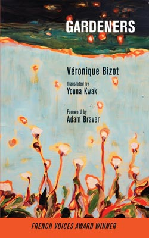

|
 |
|
Preorder now (Ships June 2017) Review or Follow on Goodreads |
Translated by Youna Kwak
ISBN: 978-1-944884-12-3 (pbk)
978-1-944884-13-0 (ebook)
June, 2017
"Gardens are what is wanted. Gardens more than anything else, and supposedly for pleasure, though gardens are nothing but traps. Breathlessly pursuing gardens, we run straight into the lair of the wolf, and when we realize our mistake, are at the mercy of the gardeners."
Even the safe harbor of an ordinary house garden is transformed into bewildering, uncharted territory in Véronique Bizot's critically acclaimed short story collection Gardeners. If the poet Mahmoud Darwish once observed that "[t]here is nothing left of us in the wilderness save what the wilderness kept for itself," so too, in the apartments, backyards, and hotel lobbies that are the settings for Véronique Bizot's sober, fabulist tales, it is domestic life that constitutes the truly wild terrains, in which we may yet barely survive. A man returns home after decades abroad, only to find that a phalanx of gardeners have massacred the treasured chaos of the land he once knew. Three siblings repair to an abandoned country estate after gambling debts have left them in ruin, but the neighbors they encounter there prove more menacing than the urban cutthroats they left behind. A retired archeologist vacationing at a posh resort in Portugal is thrust back into troubled memories of her past life, by an invasion of possibly imaginary rats. These and three other stories comprise Bizot's subtle and strange, tender and terrifying collection of stories. Celebrated in France for her dangerously straightforward, lyrically troublesome prose, Bizot has written six tales full of the alien monstrosities of ordinary life, where the quotidian rhythms of sibling squabbles, home maintenance, and friendly encounters with neighbors skim thinly over undercurrents of murderous intents. Everyday life is the palette from which she draws to paint portraits of loneliness, greed, jealousy, and despair, but with such a subtle touch that we find ourselves laughing at her sharp wit before falling under the spell of the extraordinarily bizarre and compelling universe that her characters inhabit. Under her masterful hand, the banal gestures of our living serve not only to survive but to construct a wondrous and unpredictable world—a world in which "most gardens are full of corpses."
Gardeners is a wild and unrelenting chorus of voices that thrilled me and terrified me in equal measure.
--Catherine Lacey, author of The Answers and Nobody Is Ever Missing
These are haunting and strangely beautiful stories. Bizot's characters interrogate and ultimately redefine our ideas of nature and social responsibility, leaving us to confront our expectations of each other and the world. We are indebted to Youna Kwak for bringing this unique voice into English and doing it so well.
--Peyton Burgess, author of The Fry Pans Aren't Sufficing
If you are a short story junkie—if you are a literary adventurer of any kind, really—you need Véronique Bizot's Gardeners. Reading this book is like listening to music in a key you never knew existed. Each tale is unique, and utterly surprising at every turn. Gardeners sticks. Bizot's characters, and their voices, will be with me for a long time.
--Nicholas Mainieri, author of The Infinite
Gardeners is a captivating, hypnotic collection, thought-provoking and thick with the flavors of Beckett and Poe. I loved it, and carry the stories with me.
--Bill Loehfelm, author of Let the Devil Out
Véronique Bizot is a marvel. Her Gardeners is richly detailed—vivid, wild and beguiling without the starkness of much French experimental fiction. The unsettling air of these stories grows thicker as you move from one to the next. And Youna Kwak is a translator to keep your eye on. She has translated Bizot's stylized narrative with flair, offering a lean, expectant and yet deceptively simple prose—perfect for this collection.
--Peter Thompson, author of Winter Light, translator of Nabile Farès and Abdelkader Djemaï, among many others.
Not only is there an importance and influence of place in Bizot's stories, but, arguably even more essential, a confluence of the interiority of the place and the interiority of human existence.
--Adam Braver, author of November 22, 1963 and The Disappeared
In Véronique Bizot's second collection, Les Jardiniers, the absurdity is no more than a shift, a deviance, another look at the world. But humor and ferocity are still there. The closer Véronique Bizot is to reality, the more worried she is, and the more her reader feels helpless. Of the six stories collected here, four have as narrators solitaries posted at a window, a balcony or a terrace, and in the fifth an old Armenian arriving directly from the foothills of the Caucasus leaps from the bay window of the twenty-sixth floor of the apartment of his son-in-law. From their window-watchtowers, narrators or characters observe, scrutinize, spy, listen, recall, judge, ironize. Fears and neuroses, hauntings and re-stitching. We can never guess where Véronique Bizot will take us.
--Bernard Pivot, Le Journal du Dimanche
For Une île
Jewel of elegance and irony mixed. The story of Véronique Bizot, where the silhouettes are scarcely moving, is as if executed in a single graceful jet, with dry point and charcoal. As for essences, perfumes, if they are so present, it is first to conceal that this little book is woven only by absences. The deep, almost capsizing odor emanating from these pages is, first of all, that of solitude.
--Olivier Mony, Livres Hebdo
Cover painting and design by Munro Galloway.